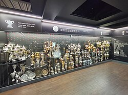

Manchester United Trophies
Manchester United is one of the most successful football clubs in England and Europe. Over the years the club has won many domestic and international trophies.

English Competitions
- 20 English League Titles
- 12 FA Cups
- 6 League Cups
European Competitions
- 3 UEFA Champions League Titles
- 1 UEFA Europa League
International Titles
- 1 FIFA Club World Cup
These achievements make Manchester United one of the most decorated football clubs in football history. Legendary players and managers contributed to these successes.